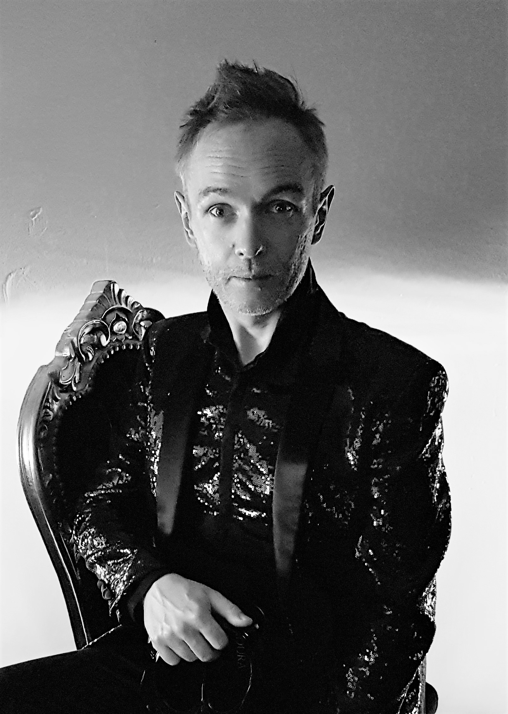

JAKUB BURZYŃSKI was born in 1976 in Zabrze, Poland. He graduated with disctinctions of the faculties of Theory of Music and Solo Singing. Founded his first ensemble at the age of 18, he later became member or founder of numerous music groups until 1998 when he brought to life early music ensemble La Tempesta. With this ensemble he gives concerts and makes recordings of the repertoire ranging from Renaissance polyphony to the 19th century oratorios. As a soloist he sung major roles in the operas by Charpentier (Actéon), Purcell (King Arthur), Vivaldi (Dorilla in Tempe), Sarro (Didone abbandonata), Handel (Giulio Cesare, Rinaldo), Mysliveček (Motezuma), Mozart (Apollo et Hyacinthus, Mitridate re di Ponto), Krauze (Balthazar) and Zych (Poiesis). He is also regularly invited to sing Baroque sacred music, as well as the contemporary repertoire (Pärt, Szymański, Głowicka, Sarwas, Penderecki, Raskatov). Regarding the fact that his first solo album, including Stabat Mater and Nisi Dominus of Antonio Vivaldi, was acclaimed the 'Recording of the Year' by British portal Music Web International, the artist has performed this programme most frequently on numerous concerts in Poland and abroad. One of the tracks from this album was used in the French movie Divines (2016). Numerous recordings by Jakub Burzyński were released by DIVOX, NAXOS, BIS, ARTS, DUX, MUSICON and other labels. Jakub Burzyński is a constant speaker on the Festival of Silent Music in Toruń and artistic director of Barok w Radości Festival in Warsaw as well as International Summer School of Early Music Schloss Scharfeneck. Since 2009 he has given masterclasses of Baroque singing in Czech Republic.
